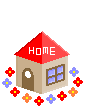
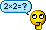
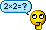
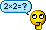
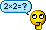
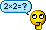

Ali's Blog
Home

About
Entries
Chat
Kool Webpages
Guestbook
Kool Books
Truth Table

Contact
Blog Entries
Wounded Child, No Surviving Family
The Blurry Lines Between Ethnography and Espionage
What is a Woman?
The Palestinian Condition
Broken Pedestal: Isaiah Berlin
Self-Immolation as Protest
Should we kill predators?
Foucault and the Law of What can be Said
The Effects of Homoerotic Media on Sexual Attraction: A 10 Day Experiment
In Defence of Informed Suicide
Pulling an Arithmetic Horse Out of a Scientific Realist Hat
The Problem of Evil
Two ways of thinking
Why do we still have to work?
Another Year, Another Reminder of my Spoiling Flesh
A Culturally Relativist Worldcup
Why is being Anti-animal abuse mocked?
What is 'truth'?
Against Self-Narratives
Review of 'Monsieur Monde Vanishes'
Should society subsidise metaethicists?
Liberal Irony
رجل يصرخ على السحاب
 Chat
Kool Webpages
Guestbook
Kool Books
Truth Table

Contact
Chat
Kool Webpages
Guestbook
Kool Books
Truth Table

Contact
Chat
Kool Webpages
Guestbook
Kool Books
Truth Table

Contact
Chat
Kool Webpages
Guestbook
Kool Books
Truth Table

Contact